“The world does not exist to serve the player. The world remembers.
There is no destiny. There are choices.”
Nature is not your enemy. It simply does not care.
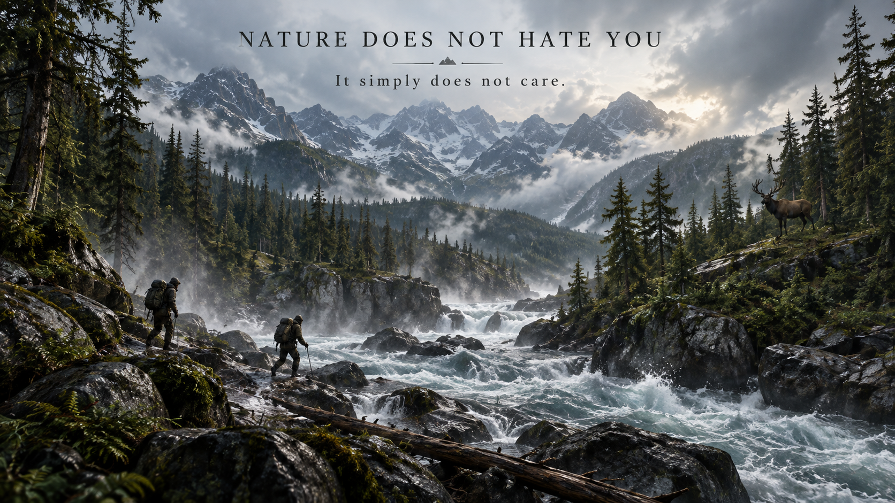
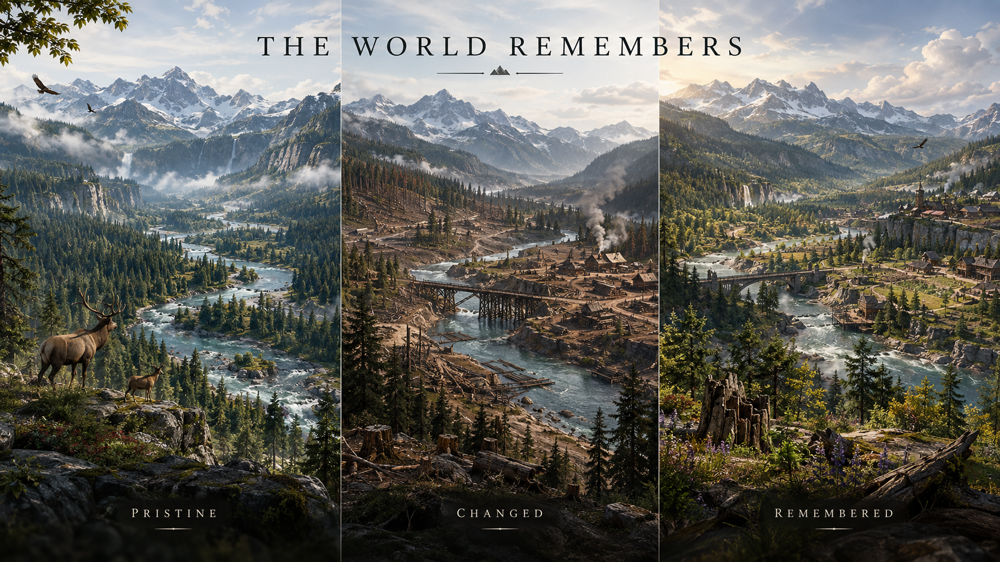
Prove the core mechanic before building the entire world.
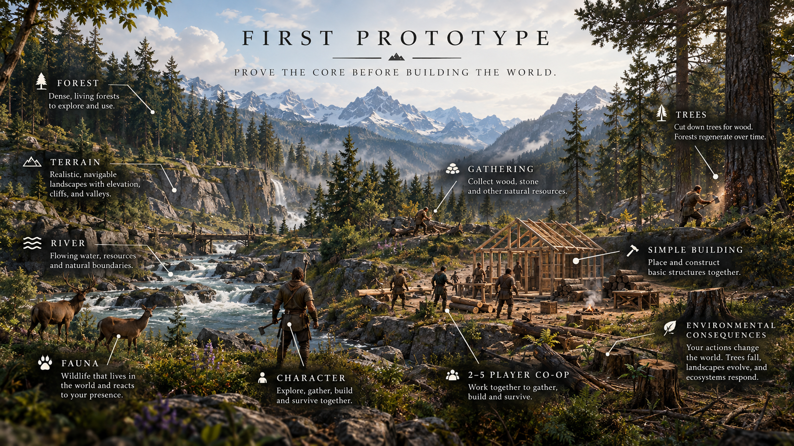
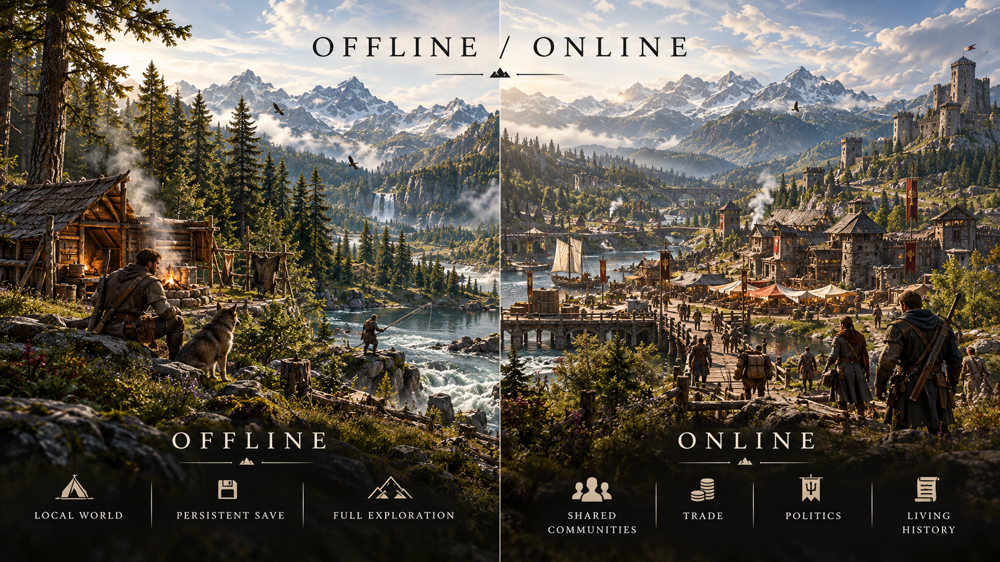
Communities outlive their founders.
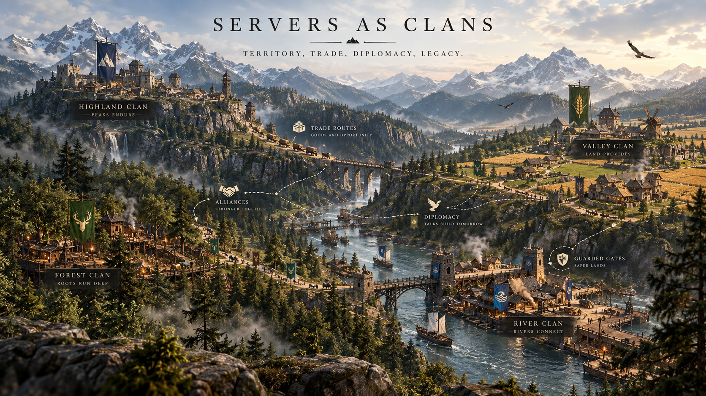
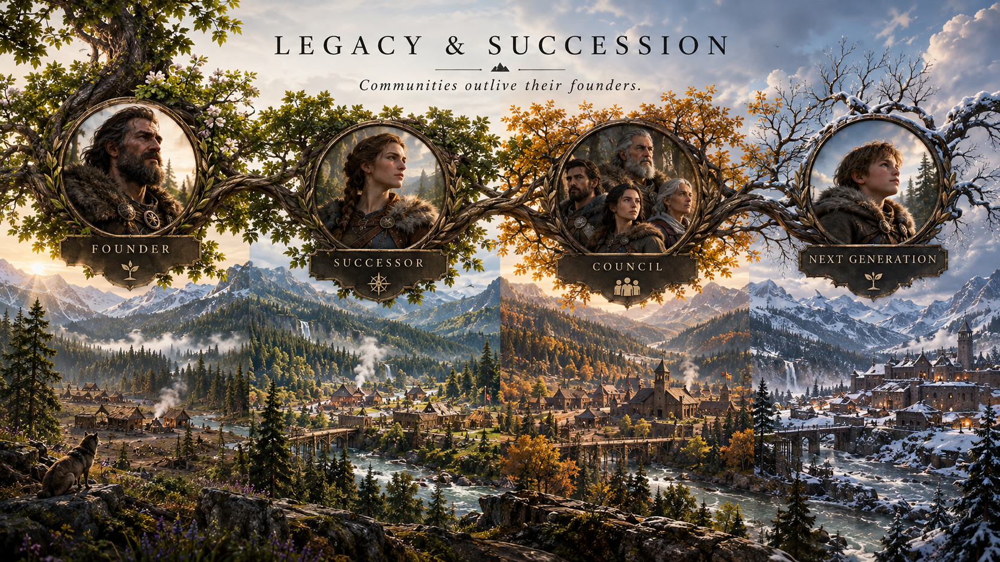
AI processes authentic world history and produces genuine physical books.
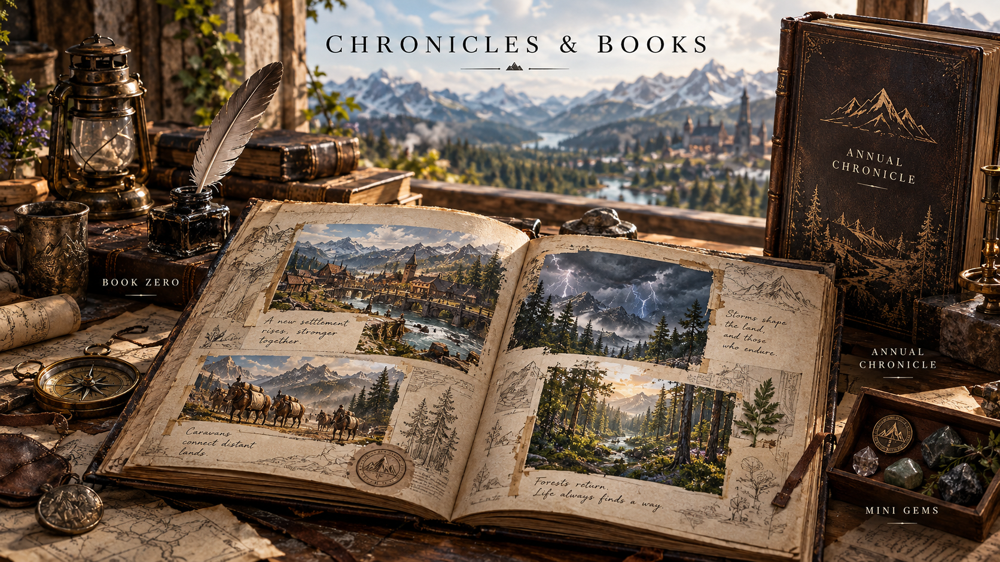
Community-Shaped, Founder-Owned. The community participates, the founder guards the vision.
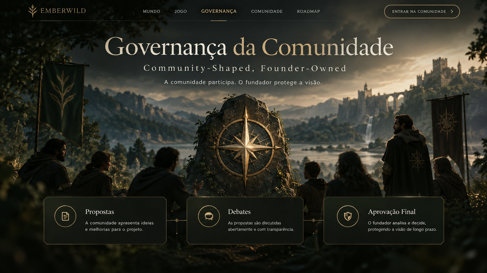
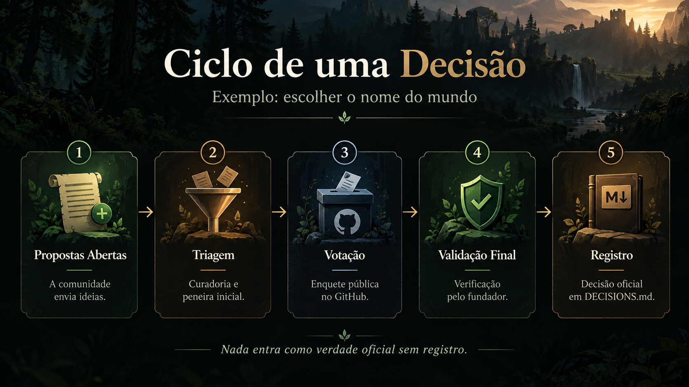
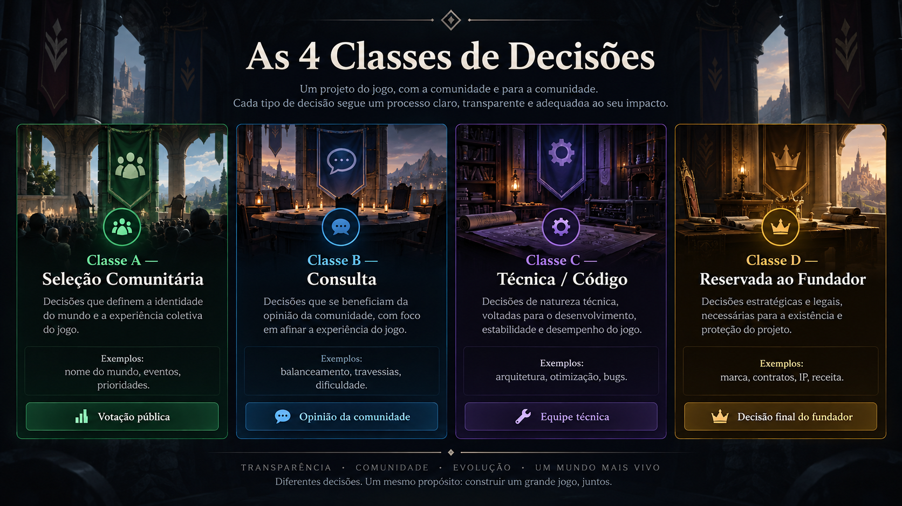
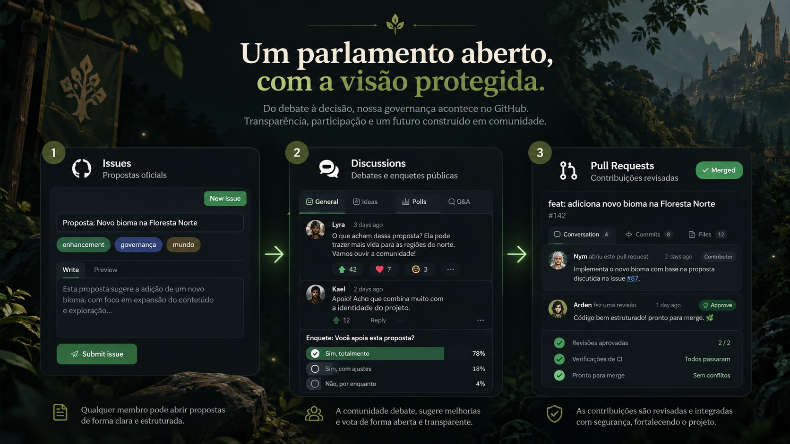
Build the world. Build your future.
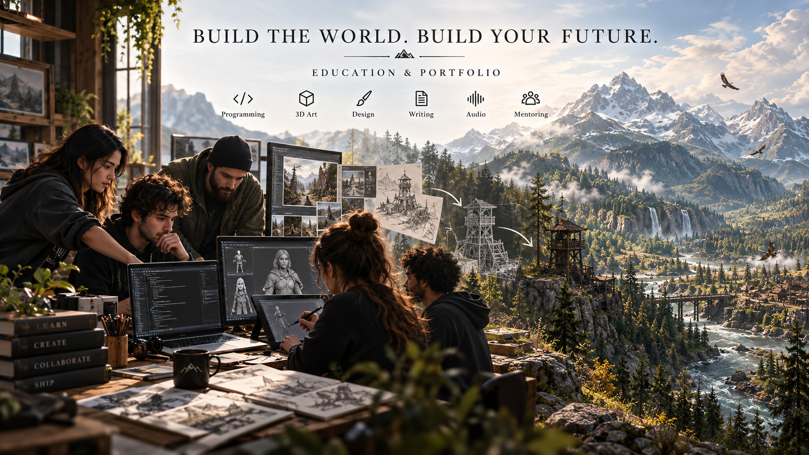
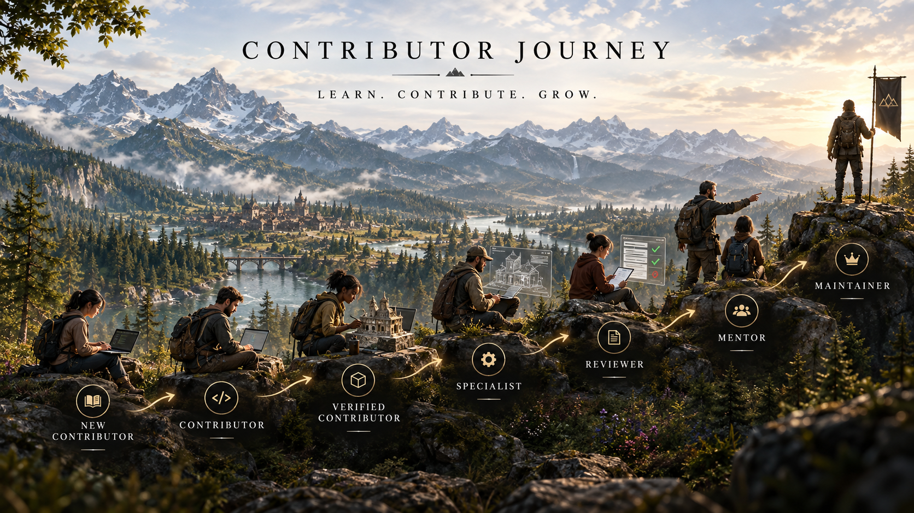
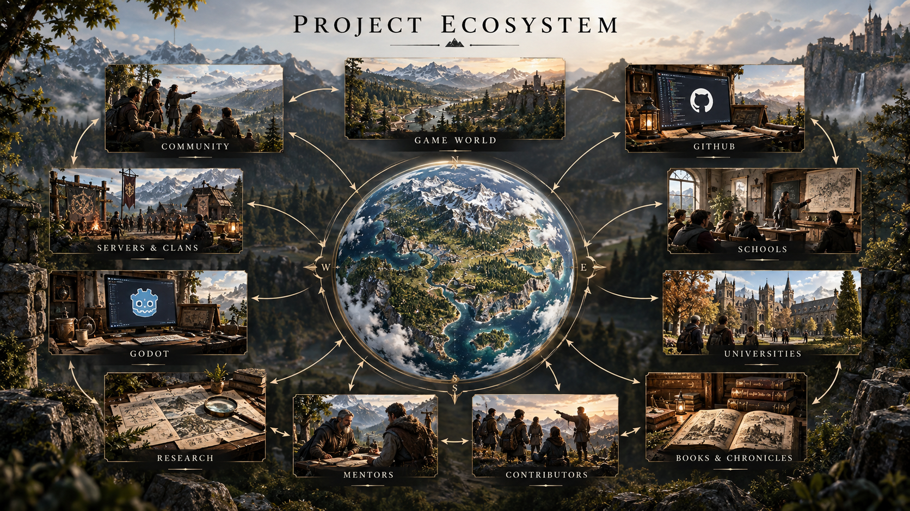
Connect with the development team, follow real-time milestones, and join the global pioneer community.
Every commit, proposal, and architectural decision is transparently tracked and synchronized directly from GitHub.
Under our Governance (Class A • D-005), this world has no permanent name yet. Community suggestions enter the official ballot.
Submitting will directly register your idea into our GitHub Community Discussions & Ballot.